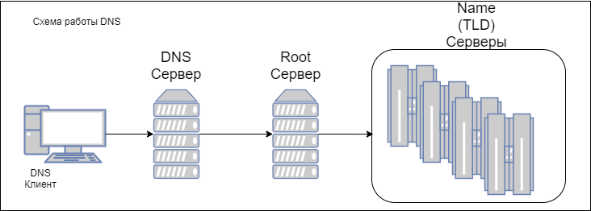

В этом разделе приведен высокоуровневый обзор архитектурных шаблонов клиент-сервер. Мы начинаем с двухуровневых моделей клиент-сервер и увидим как ограничения двухуровневых моделей клиент-сервер привели к разработке трехуровневых и затем n-уровневых моделей клиент-сервер. Также кратко рассмотрим такие вариации клиент-серверной модели как master-slave, peer-to-peer с примерами использования. Завтем мы рассмотрим типовые фреймворки веб-приложений. Требования к веб-приложениям отличаются от требований к классическим клиент-серверным приложениям, и ключевым отличительным фактором является динамическое обновление пользовательского интерфейса на основе изменений в базе данных. Мы постараемся рассмотреть наиболее популярные шаблоны, используемые при разработке веб-приложений
Основные темы этой части
Модель клиент сервер это один из старейших архитектурных шаблонов. Он описывает коммуникацию двух разных частей, клиентской и серверной
Клиент и сервер обычно составляют распределенную систему и взаимодействуют используя коммуникационную сеть
Не существует принципиального ограничения количества клиентов, которые могут обслуживаться одним сервером. Также не обязательно, чтобы клиент и сервер находились в разных системах. Связь между клиентом и сервером осуществляется путем обмена сообщениями по схеме "запрос-ответ". Клиент отправляет запрос на обслуживание, а сервер возвращает ответ. Эта схема взаимодействия "запрос-ответ" является примером межпроцессного взаимодействия. Для эффективного взаимодействия необходимо иметь четко определенный протокол связи, устанавливающий правила взаимодействия, такие как формат сообщений, правила обработки ошибок и так далее. Все коммуникационные протоколы, используемые для взаимодействия клиент-сервер, работают на прикладном уровне стека протоколов. Для дальнейшей оптимизации в процессе взаимодействия клиент-сервер сервер иногда реализует специальные интерфейсы прикладного программирования (API), которые могут быть использованы клиентом для доступа к какой-либо конкретной услуге с сервера. Шаблон клиент-сервер, изображенный на рисунке, имеет два уровня: клиентский и серверный, и поэтому его также называют двухуровневым шаблоном или двухуровневой системой клиент-сервер

Термин "сервис", используемый в контексте клиент-серверной архитектуры, относится к абстракции ресурса. Ресурс может быть любого типа, а имя сервера определяется на основе ресурса, который предоставляется сервером (сервис). Например, если сервер предоставляет веб -страницы, он называется веб-сервером, а если сервер предоставляет файлы, он называется файловым сервером и т.д. Сервер может получать запросы от множества клиентов в любой момент времени. Но любой физический сервер имеет ограничения возможностей обработки потока сообщений. Поэтому часто сервер должен определять приоритет входящих запросов и обслуживать их в соответствии с их приоритетом. Система планирования, используемая на сервере, помогает серверу в распределении приоритетов. Ниже приведены общие области применения шаблонов клиент-сервер для различных случаев использования.
Email сервер и email коиент: Сервер отправляет письма в ответ на запрос с клиента. Примеры - Microsoft Exchange от Microsoft, Gmail от Google И другие. Работу такой почтовой системы можно описать так:

Когда вы отправляете письмо, приложение почтового клиента связывается с почтовым сервером по протоколу SMTP и загружает содержимое на сервер. Когда оно загружено, почтовая система доставляет письмо на другой сервер, который использует протокол POP3 для обслуживания клиентского ПО доставляющего письмо адресату. Подробное описание этого процесса это не тема этого документа, но если тема заинтересовала - можно почитать статью.
DNS - одна из самых важных служб, существующих в Интернете. В Интернете есть огромное количество устройств, и каждое из этих устройств называется хостом. Каждый хост может быть принтером, маршрутизатором, компьютером или любым другим устройством. Каждый хост имеет уникальный адрес, называемый IP-адресом. Помимо IP-адреса, с каждым хостом также связано уникальное имя хоста. Например, если имя хоста равно LP231 и он присутствует в домене acme.com, то полное доменное имя (FQDN) хоста равно LP231.acme.com. Полное доменное имя используется для уникальной идентификации хоста в пространстве имен DNS. Пространство имен DNS содержит несколько часто используемых суффиксов имен, например:
Система DNS работает с использованием концепции распределенных баз данных, основанной на модели клиент-сервер. DNS-клиенты - это объекты, которым требуется разрешение имен (сопоставление имен хостов с IP -адресами). DNS-серверы поддерживают данные, необходимые для разрешения имен. Высокоуровневая схема архитектуры DNS клиент-сервер приведена на следующей диаграмме:
Предположим, что URL-адрес www.acme.com введен в браузере DNS-клиента. Браузер подключается к DNS-серверу, чтобы получить IP-адрес соответствующий доменному имени. DNS-сервер выполняет эту задачу, сначала подключаясь к одному из корневых (root) DNS-серверов. Корневые серверы хранят IP-адреса всех DNS-серверов, которые обрабатывают домены верхнего уровня, такие как .edu, .com и так далее. В этом примере корневой сервер, получив IP-адрес домена верхнего уровня .com отправляет в ответ адрес TLD DNS сервера, который обрабатывает адреса домена acme.com. Этот сервер, в свою очередь, возвращает полный полный IP-адрес, который отпраялется обратно клиенту, который инициировал запрос DNS. Затем компьютер-клиент DNS может использовать IP-адрес для доступа к требуемой веб-странице. Подробнее о процессе можно почитать здесь.
Основными аспектами этой клиент-серверной архитектуры являются:
|
Функцилнальная роль
|
Описание |
|---|---|
| Службы представления |
Обеспечивает пользовательский интерфейс и диалоговое управление
|
| Службы логики представления |
Взаимодействие с пользователем и проверка правильности вводимых данных
|
| Бизнес-логика |
Набор бизнес-правил, определяющих, как можно хранить,
создавать и изменять данные
|
| Логика распространения | Управление коммуникациями |
| Логика СУБД | Операции с данными и управление целостностью данных |
| Службы СУБД | Управление различными атрибутами транзакций базы данных |
| Файловые службы | Операции с файлами и общий доступ к файлам |
В самом широком смысле системы клиент сервер делятся на:
Выбор клиента производится в зависимости от типа схемы клиент-сервер, которая запланирована в системе. Например, если схема предусматривает выполнение большого количества функций на стороне клиента, то имеет смысл перенести все на сторону клиента, и наоборот. Функциональные требования, которые обсуждаются в этом разделе, дадут более полное представление о выборе клиентских и серверных подходов для реализации конкретных шаблонов взаимодействия клиент-сервер.
Существуют различные способы реализации функционала в шаблоне клиент-сервер. Ниже приведены некоторые из наиболее распространенных способов:
В схеме remote data access приложение находится в клиентском компоненте, в то время как управление данными осуществляется серверным компонентом. Сервер, который выполняет управление данными, обычно называется сервером системы управления базами данных (СУБД) или сервером данных. СУБД продукты обычно предоставляют уровень или компонент программного обеспечения на стороне клиента, который управляет взаимодействием с сервером данных. Этот компонент программного обеспечения предоставляет средство data manipulation language (DML). Клиентские системы поддерживают представление и бизнес-логику и взаимодействуют с сервером данных с помощью DML. Эти модели обычно предполагают использование толстого клиента, поскольку значительный объем обработки также выполняется клиентскими системами. Распределение функционала в архитектуре remote data access показана на следующей диаграмме:

В схеме remote presentation интерфейс пользователя (GUI) сопоставляется с экранной формой существующего приложения при помощи текстового представления. Типичный режим работы этого шаблона предполагает использование рабочих станций, которые оснащены возможностью перехватывать текстовые потоки данных, отправляемые с серверной системы, и отображать их на экране. В этих системах обработка и вычисления происходят только на стороне сервера. По похожей схеме работает обычный браузер, но наличие возможности скриптовой обработки отличает эту схему от remote presentation. Одним из идеальных примеров такой реализации является IBM 3270 (мэйнфрейм). В этой схеме данные формируются на мейнфрейме. Затем данные отправляются на клиентскую рабочую станцию в виде потока данных размером 3270 пикселей. Клиентская рабочая станция получает данные, интерпретирует их и преобразует в графическую форму для отображения в окне. Если пользователь вводит какие-либо данные через клиентскую рабочую станцию в окне графического интерфейса пользователя, то приложение front ware, которое запускается на клиенте рабочая станция преобразует данные в формат, совместимый с 3270, и отправляет их обратно на сервер для выполнения дальнейших действий. Разделение функций в схеме клиент-сервер удаленной презентации показано на следующей диаграмме:

В модели split logic функциональность приложения разделена на две части: одна будет реализована на стороне клиента, а другая на стороне сервера. Этот шаблон является очень сложным по сравнению с двумя другими шаблонами, поскольку для его функционирования и клиенту, и серверу требуются отдельно скомпилированные прикладные программы. Перед внедрением этого шаблона разработчикам очень важно определить функции, которые должны быть реализованы на стороне клиента и сервера, и составить список необходимых функций и экранных форм, которые должны выполняться на стороне клиента и сервера. Такая схема показана на следующей диаграмме:

Рассмотрим еще несколько вариаций клиент-серверной модели. Вот еще два типовых случая:
Рассмотрим их подробнее
Шаблон master-slave применяется при проектировании системы, если система включает в себя аналогичные или похожие вычисления, которые необходимо выполнять повторно с разными наборами входных данных и контекстом. Шаблон master-slave обеспечивает отказоустойчивость и параллельные вычисления.
Главный компонент распределяет работу между всеми подчиненными компонентами и вычисляет конечный результат, суммируя результаты, которые возвращает каждый подчиненный компонент. Шаблон master-slave используется для проектирования встраиваемых систем и используется при проектировании систем, которые выполняют массовые параллельные вычисления. Ниже приведена схема последовательности действий шаблона master slave:
Схема "главный-подчиненный" работает по принципу "разделяй и властвуй". При использовании этой схемы концепция координации отделена от реальной работы, поскольку все подчиненные устройства работают параллельно. Следовательно, у подчиненных устройств нет общего состояния, они работают изолированно. Проблемой в шаблоне master slave является потенциальная задержка. Это может вызвать проблему в системах, где время отклика очень важно. Этот может быть применен к конкретной проблеме, только если она поддается декомпозиции.
Один из способов реализации шаблона master-slave заключается в использовании одного главного потока, который создает несколько подчиненных потоков. Каждый из подчиненных потоков выполняет часть общего вычисления и возвращает результат главному потоку. Как только вычисление завершено, главный поток объединяет результаты и завершает работу подчиненных потоков.
Peer-to-peer архитектурные шаблоны относятся к категории симметричных клиент-серверных шаблонов. Симметричность в данном контексте означает, что одна и та же система может выполнять функции клиента и сервера. Такая система, также называемая одноранговой, отправляет запросы другим одноранговым узлам в сети и в то же время получает и обслуживает запросы от других одноранговых узлов.
Этот шаблон обычно используется для реализации децентрализованной сети узлов, использующих распределенные ресурсы. Распределенными ресурсами могут быть либо вычислительные мощности, либо данные, которые могут использоваться для задач распределенных вычислений, таких как совместное использование контента, коммуникация и так далее. Общий шаблон одноранговоой системы показан на следующей диаграмме (однако возможны некоторые вариации):
Есть два самых распространенных варианта реализации такого шаблона:
Хотя схемы peer-to-peer очень эффективны для таких приложений, как общий доступ к файлам, они также предоставляют возможности для реализации множества угроз безопасности. TCP-порты, используемые одноранговыми приложениями, должны постоянно контролироваться и находиться под наблюдением систем предотвращения вторжений.
Некоторые ключевые преимуществ клиент серверных систем:
После того, как мы подробно рассмотрели шаблоны клиент-сервер, возникает следующий вопрос: когда следует использовать двухуровневую схему клиент-сервер для конкретного архитектурного проекта. Следующие моменты могут быть использованы в качестве ориентира при принятии решения:
Вот главные ограничения таких систем:
Чтобы преодолеть эти ограничения двухуровневой модели клиент-сервер, была разработана трехуровневая/многоуровневая архитектура клиент-сервер. Большинство современных приложений , разрабатываемых с использованием архитектуры клиент-сервер, основаны на трехуровневой архитектурной модели
В этой архитектуре присутствуют следующие три уровня (слоя):
Преимсущества:
Хотя трехуровневые архитектурные схемы дают ряд преимуществ, все еще существуют ограничения на масштабируемость архитектуры, когда речь заходит о таких сетях, как Интернет, которые требуют масштабируемости в больших масштабах.
Вот несколько условий при которых 3-уровневая архитектура станет хорошим выбором:
Вариантом трехуровневой архитектурной схемы, обеспечивающей масштабируемость, является n-уровневая архитектурная схема. В n-уровневом архитектурном шаблоне общее количество уровней равно n, где n > 3. В многоуровневой архитектуре уровень приложений (который является средним уровнем) разделен на множество уровней. Распределение кода приложения и функций между различными уровнями варьируется в зависимости от архитектурного проекта. Схема многоуровневой архитектуры выглядит следующим образом:
Примером такого приложения может быть типовой интернет-магазин, где слой презентационной логики представлен web интерфейсом или мобильным приложением, слой бизнес-логики реализуется на веб-сервере либо веб-сервере + выделенном сервере приложений и слой данных представлен выделенным звеном СУБД
В такой схеме слой представления, например, отвечает за отрисовку интерфейса пользователя (каталог товаров, корзина), сервер приложений отвечает за логику (добавление товара в корзину, формирование счета на оплату) в конкретной сессии а сервер СУБД обеспечивает долговременное хранение истории операций и данных о товарах
Многоуровневая архитектура клиент-сервер, используемая для веб-приложения, которое обсуждалось в предыдущем разделе, является хорошим примером распределенной архитектуры клиент-сервер. В распределенных архитектурах обычно есть какие-то внутренние компоненты хоста (такие как мэйнфрейм, сервер баз данных и т.д.), интеллектуальный клиент на уровне UI и несколько агентов посередине, которые выполняют все действия, относящиеся к транзакциям, такие как обработка транзакций, безопасность, обработка сообщений и т.д.
Ключевые концепции связанные с распределенной архитектурой:
Мониторы транзакций также предоставляют сервисы, которые помогают отслеживать транзакции, балансировать нагрузку и позволяют автоматически перезапускать серверы и существующие на них очереди
Большинство веб-приложений интерактивны по своей природе. Это означает, что при внесении изменений в данные они должны отражаться в пользовательском интерфейсе мгновенно, без каких-либо дальнейших задержек. В дополнение к этому сценарию различным пользователям приложения могут потребоваться выходные данные в различных форматах, таких как таблицы Excel, столбчатые диаграммы, круговые диаграммы, информационные панели и т.д., как показано на следующей диаграмме:

Когда происходит изменение функциональности конкретного приложения, пользовательский интерфейс приложения также должен быть способен отражать изменения с добавлением новых опций, таких как меню, выпадающие списки и так далее. Это подчеркивает тот факт, что пользовательские интерфейсы веб-приложений всегда подвергаются серии запросов на изменение. Эти запросы на изменение (UI) могут возникать при различных обстоятельствах, например:
Из этого мы можем сделать вывод, что пользовательские интерфейсы всегда подвержены изменениям. Разные пользователи приложения предъявляют к пользовательскому интерфейсу разные типы противоречивых требований. Например, интерфейс руководителя - пользователя отчености и интерфейс администратора отчетов будет различаться детализацией. Все это требует наличия пользовательского интерфейса, дизайн которого является достаточно гибким, чтобы реализовать все типы пользовательского интерфейса. Невозможно создать систему с такой гибкостью, если пользовательский интерфейс жестко привязан к функциональному ядру приложения. В таком случае пришлось бы создать и поддерживать несколькио типов программных приложений, по одному для каждого типа пользовательского интерфейса, что было бы очень дорого. Ниже приведены основные аспекты, которые необходимо учитывать при разработке шаблонов проектирования для веб-приложений:
Эти факторы стали мотивацией для разработки шаблона model view controller (MVC), который в основном используется для проектирования и разработки мобильных и веб-приложений. Ниже приведены основные компоненты архитектурного шаблона MVC:
Разделение компонентов model, view и controller обеспечивает гибкость, позволяя использовать несколько представлений (view) одной и той же модели. В случае, если пользователь изменит данные модели, используя компонент controller в одном view, все другие мшуц, использующие те же данные, должны быть немедленно обновлены, чтобы отразить изменения. Об этом заботится модель, уведомляя все view при каждом изменении своих данных. Представление, в свою очередь, берет обновленные данные из модели и обновляет интерфейс. Эти действий требуют наличие механизма распространения изменений в модели MVC.
Компонент model экспортирует процедуры для обработки, специфичной для конкретного приложения. Эти процедуры вызываются компонентами контроллера в ответ на входные данные, полученные от пользователя. Компонент model также предоставляет функции, которые могут использоваться компонентом view для доступа к своим данным.
Компоненты View используются для представления информации конечному пользователю. Могут существовать различные представления для предоставления информации различными способами в соответствии с требованиями пользователей. Каждое представление связано с процедурой обновления, которая активируется механизмом распространения изменений. Механизм распространения изменений работает путем ведения реестра всех зависимых компонентов, присутствующих в модели. Все связанные представления и контроллеры, на которые повлияют изменения в этих компонентах, также регистрируются. Любое изменение состояния модели запускает механизм распространения изменений. Компонент view получив от системы распространения изменений сообщение, извлекает из модели обновленные значения данных и отображает их на экранах пользовательского интерфейса
Компонент контроллера принимает пользовательский ввод в виде событий. Формат, в котором эти данные о событиях передаются на контроллер, зависит от платформы пользовательского интерфейса. Но в любом случае контроллер выполняет процедуру обработки событий, связанную с полученым событием. Общая схема работы шаблона MVC показана на рисунке:
Рассмотрим популярный фреймворк построеный по такой модели
В ASP.Net шаблоны для компонента представления и компонента контроллера определены фреймворком. Разработчику остается разработать только компонент модели в соответствии с конкретными требованиями приложения
View: Файлы ASPX и ASCX выполняют функции, связанные с компонентом view. В этом случае объект view обычно наследуется от объекта controller
Контроллер: Обязанности компонента controller разделены между двумя компонентами. Генерация и передача событий осуществляется платформой, а именно классами Page и Control.
Model: ASP.NET не требует обязательного использования модели. Выбор за разработчиком, создавать ли класс model или отказаться от него. В случае, если модель не используется, обработчики событий в контроллере могут использоваться для выполнения любых вычислений, а также для сохранения данных.
Шаблон MVP является вариантом шаблона MVC и в основном используется для разработки пользовательских интерфейсов для веб-приложений. В основном он был разработан для упрощения автоматизированного модульного тестирования. На приведенном здесь рисунке показана архитектура шаблона MVP:
Компоненты MVP
Вот ключевые сошлашения подхода MVP:
Примерами применения этого подхода являются ASP.Net forms и Windows forms.
MVVM - популярный шаблон, используемый для разработки повторно используемых и легко тестируемых веб-приложений. MVVM - это современный вариант MVC, основная цель которого - обеспечить четкое разделение между компонентами Model и View. Основными компонентами шаблона являются следующие:
Составные части MVVM:
Ниже приведены ключевые преимущества использования шаблона MVVM:
Удобство сопровождения:
В этом шаблоне четкое разделение различных фрагментов кода упрощает его обслуживание, а также обеспечивает быстрое обновление.Тестируемость:
В этом шаблоне различные фрагменты кода очень детализированы и отделены от основной функциональной логики. Это очень упрощает модульное тестирование.Расширяемость:
Детализированные фрагменты кода облегчают повторное использование кода, а также позволяют быстро вносить изменения в кодовую базуШаблон MVVM - это правильный выбор для разработки веб-приложений, требующих соблюдения следующего:
Рассмотрим фреймворк построеный та таком шаблоне
Prism - это фреймворк, созданный с использованием шаблона MVVM. Он помогает в проектировании и разработке гибких и простых в обслуживании приложений Windows presentation foundation (WPF). Ниже приведены ключевые особенности фреймворка Prism:
Вот основные возможности Prism:
Помимо архитектурных шаблонов MVC, MVP и MVVM, некоторые классические паттерны проектирования часто используются при создании веб-приложений. Такие шаблоны и их функциональные возможности описаны в следующей таблице:
|
Паттерн
|
Функциональность |
|---|---|
| Интерпретатор (Interpreter) |
Этот шаблон широко используется при разработке меню для приложений например, таких как редакторы и интегрированные среды разработки (IDE). Этот
шаблон работает путем интерпретации инструкций, написанных в форме грамматики языка. Этот шаблон включает в себя реализацию интерфейса expression, который используется для интерпретации
заданного выражения
|
| Снимок (Memento) |
Позволяет фиксировать текущее состояние
объекта и восстанавливать его, когда это потребуется.
|
| Наблюдатель (Observer) | Этот шаблон позволяет одному объекту, называемому subject, уведомлять об изменениях своего состояния все другие объекты (observer), которые зависят от него. |
| Состояние (State) | Позволяет объекту изменять свое поведение в зависимости от внутреннего состояния |
| Стратегия (Strategy) | Определяет общее поведение для семейств схожих алгоритмов, использующих разные стратегии |
| Шаблонный метод (Template Method) | Предлагает разбить алгоритм на последовательность шагов, описать эти шаги в отдельных методах и вызывать их в одном шаблонном методе |
| Посетитель (Visitor) | Позволяет добавлять в программу новые операции, не изменяя классы объектов, над которыми эти операции осуществляются |
| Мост (Bridge) | Решает проблему сложности путем разделения одного или нескольких классов на отдельные иерархии — абстракцию и реализацию. |
| Компоновщик (Composite) | Шаблон проектирования, объединяющий объекты в древовидную структуру для представления иерархии от частного к целому. Компоновщик позволяет клиентам обращаться к отдельным объектам и к группам объектов одинаково. |
| Фабричный метод (Factory method) | Паттерн проектирования, который определяет общий интерфейс для создания объектов в суперклассе, позволяя подклассам изменять тип создаваемых объектов |
| Строитель (Builder) |
Позволяет поэтапно создавать сложные объекты с помощью четко определенной последовательности действий. Строительство контролируется объектом-распорядителем (director), которому нужно знать только тип создаваемого объекта. |
| Адаптор (Adapter) | Позволяет объектам с несовместимыми интерфейсами работать вместе (подобно адаптору для электрических приборов) |